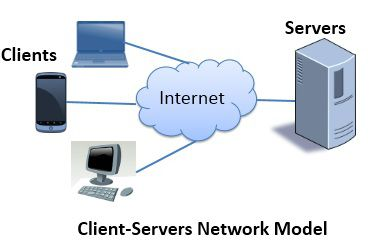

Компьютеры, подключенные к сети называются клиентами и серверами. Упрощенная схема того, как они взаимодействуют, может выглядеть следующим образом:
или ваш телефон подключен к мобильной сети) и программного обеспечения, доступного на этих устройствах (как правило, браузер, например, Firefox или Chrome).